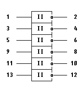
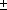

Микросхема К155ТЛ2
Микросхема представляет собой шесть триггеров Шмитта-инверторов.
Корпус К155ТЛ2 типа 201.14-1, масса не более 2 г.

Рис. 1 - Корпус ИМС К155ТЛ2

Рис. 2 - Условное графическое обозначение ИМС К155ТЛ2
1,3,5,9,10,13 - входы;
2,4,6,8,10,12 - выходы;
7 - общий; 14 - напряжение питания;
Таблица 1
| Номинальное напряжение питания | 5 В  5 % |
| Выходное напряжение низкого уровня | не более 0,4 В |
| Выходное напряжение высокого уровня | не менее 2,4 В |
| Напряжение на антизвонном диоде | не менее -1,5 В |
| Входной ток низкого уровня | не более -1,2 мА |
| Входной ток высокого уровня | не более 0,04 мА |
| Входной пробивной ток | не более 1 мА |
| Ток короткого замыкания | -18...-55 мА |
| Ток потребления при низком уровне выходного напряжения | не более 60 мА |
| Ток потребления при высоком уровне выходного напряжения | не более 36 мА |
| Потребляемая статическая мощность | не более 330 мВт |
| Время задержки распространения при включении | не более 26 нс |
| Время задержки распространения при выключении | не более 28 нс |
Зарубежные аналог:
SN7414N